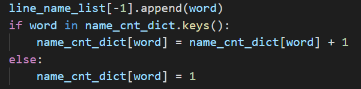
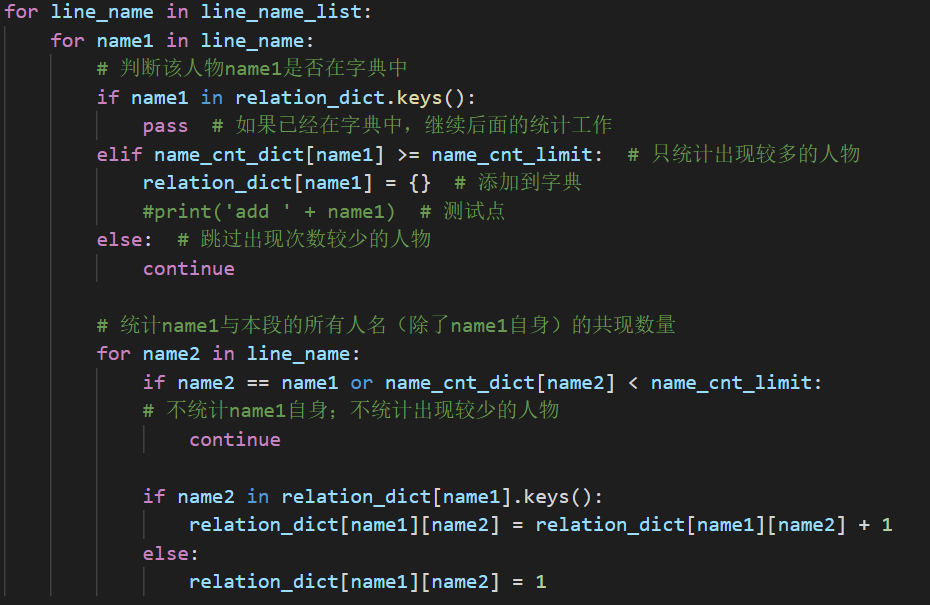
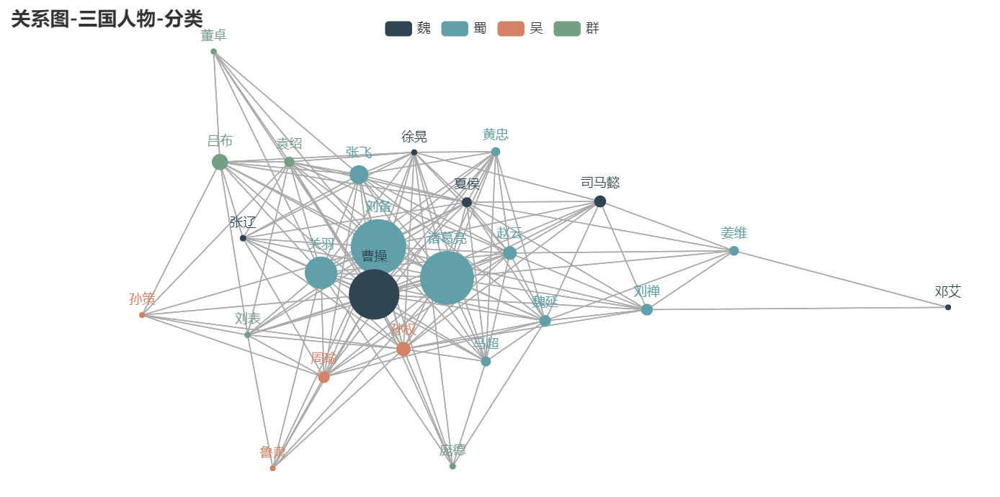

对于一篇小说，统计任意两个人物在同一段落中共同出现（“共现”）的数量
刘备和关羽、张飞去隆中卧龙岗拜访诸葛亮。不巧，诸葛亮外出游玩，不知何时回来。过了一段时间，在一个大雪天，他们又去了卧龙岗，还是没有见到诸葛亮。
新年之后，刘、关、张三人第三次来到卧龙岗。这次，诸葛亮正好在家午睡。刘备让关羽、张飞留在门外，自己站在台阶下静静等候。过了很久，诸葛亮醒来。刘备终于见到了传说中的“卧龙先生”，当即向他请教天下大势。这就是“三顾茅庐”和“隆中对”的故事。
一次检查一个段落，同时完成下面两项工作
格式：line_name_list = [ [第一段的人物], [第二段的人物], …]
第一段的人物：刘备，关羽，张飞，诸葛亮，诸葛亮，诸葛亮
第二段的人物：诸葛亮，刘备，关羽，张飞，诸葛亮，刘备，诸葛亮
诸葛亮：6，刘备：3，关羽2，张飞：2

依次检查人物列表（line_name_list）中的每个元素，即在同一段中出现的人物。
对本段中的每一个人物，循环检查本段中的所有人物。出现在同一段中的，记为一次“共现”（共同出现）。
在字典relation_dict中，每个人物对应一个“键”，视为连接的起点；与该人物存在“共现”的人物，记录在对应“值”的列表中，视为连接的终点。

| 键 | 值1 | 值2 | 值3 |
|---|---|---|---|
| 刘备 | 关羽：1 | 张飞：1 | 诸葛亮：3 |
| 关羽 | 刘备：1 | 张飞：1 | 诸葛亮：3 |
| 张飞 | 关羽：1 | 刘备：1 | 诸葛亮：3 |
| 诸葛亮 | 关羽：3 | 张飞：3 | 刘备：3 |
| 键 | 值1 | 值2 | 值3 |
|---|---|---|---|
| 刘备 | 关羽：3 | 张飞：3 | 诸葛亮：9 |
| 关羽 | 刘备：3 | 张飞：2 | 诸葛亮：6 |
| 张飞 | 关羽：2 | 刘备：3 | 诸葛亮：6 |
| 诸葛亮 | 关羽：6 | 张飞：6 | 刘备：9 |
使用第三方库pyecharts绘制关系图（Graph），其中节点即为人名，连线即为字典中相应的值。
--------------------------
现在你已经学会画图啦！考虑下面这个 简 单 的问题：画出全三国人物的关系图吧！
